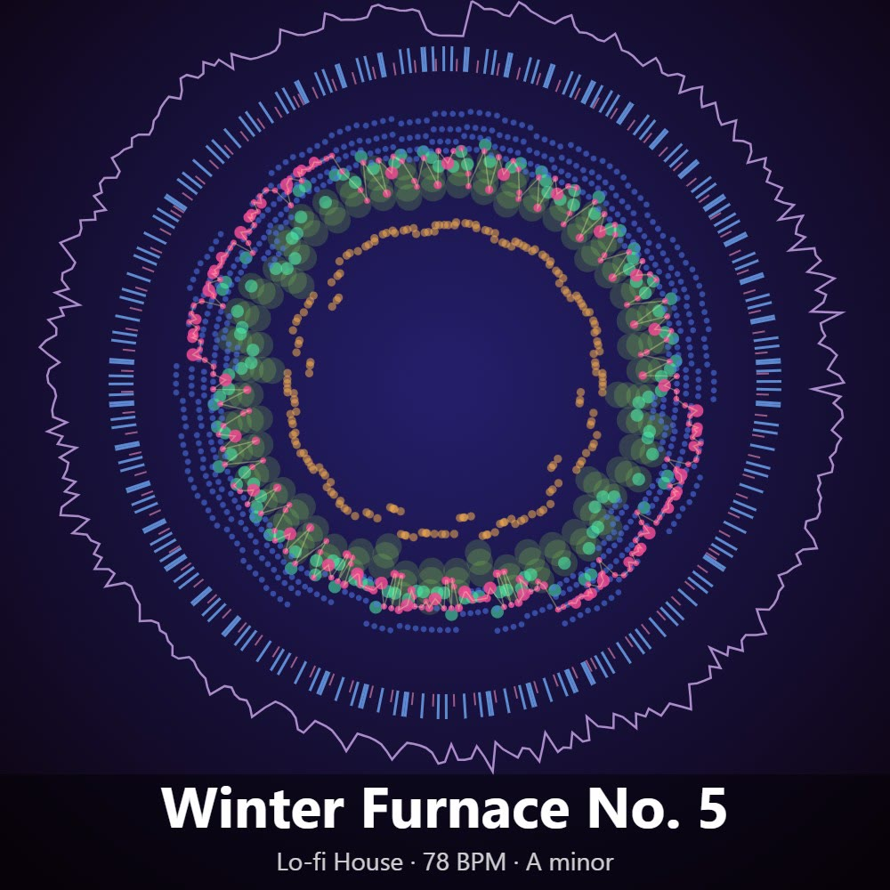

Winter Furnace No. 5

Boom drums, a sawtooth bass and a sine lead over epiano pads: a dark lo-fi house song at 78 BPM in A minor, 2:28 long across 8 sections.
Made with Randis UDS, a free desktop app that builds the tools you describe.

Boom drums, a sawtooth bass and a sine lead over epiano pads: a dark lo-fi house song at 78 BPM in A minor, 2:28 long across 8 sections.
Made with Randis UDS, a free desktop app that builds the tools you describe.